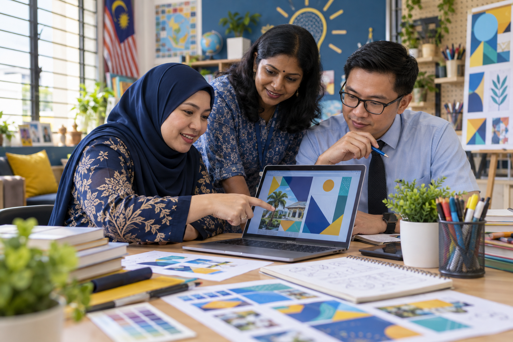

Penyediaan slaid
Aliran kerja lima langkah dan tiga latihan hands-on membina pembentangan.
Buka latihan →Latihan visual praktikal, panduan standard grafik dan perpustakaan prompt untuk kegunaan sekolah.

Aliran kerja lima langkah dan tiga latihan hands-on membina pembentangan.
Buka latihan →Poster, infografik SOP dan data, video pendek serta templat slaid.
Buka latihan →Warna, fon, susun atur dan nada visual yang sesuai untuk sekolah Malaysia.
Buka panduan →Tujuh kategori prompt untuk grafik pentadbiran, program, kelas dan komuniti.
Buka koleksi →